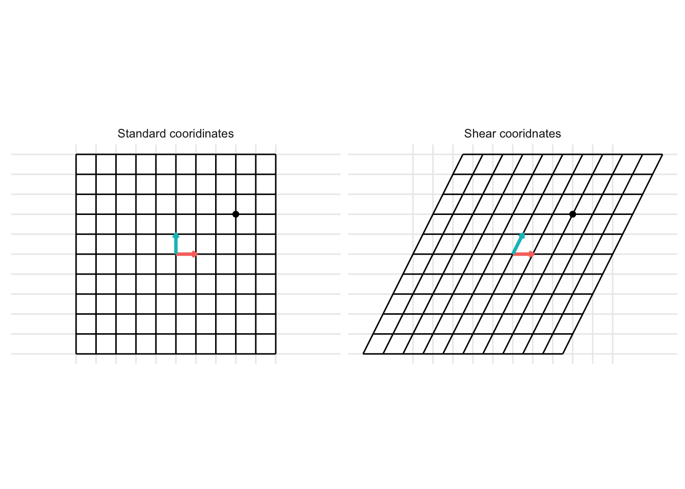

library(tidyverse)
library(dasc2594)17 Coordinate Systems and Dimension

We already know about the cartesian coordinate system (x, y, z) which has the set of basis vectors
\[ \begin{aligned} \mathbf{e}_1 = \begin{pmatrix} 1 \\ 0 \\ 0 \end{pmatrix} && \mathbf{e}_2 = \begin{pmatrix} 0 \\ 1 \\ 0 \end{pmatrix} && \mathbf{e}_3 = \begin{pmatrix} 0 \\ 0 \\ 1 \end{pmatrix} \end{aligned} \]
However, using the concept of a basis for a subspace \(\mathcal{H}\) of some vector space \(\mathcal{V}\), we might want to use a different basis. Luckily, we have learned how to construct bases for col(\(\mathbf{A}\)) and null(\(\mathbf{A}\)).
You might be wondering why we want to create different bases. The usual cartesian basis has been good enough for me so far (unless you have used polar coordinates). In data science, the data often live in a high dimensional space (i.e., there are a number of data variables). However, while the data might have many variables, some of these variables are partially dependent and thus the space in which the data are embedded might be well approximated using a subspace of the original variables which can increase computation speed (less computation with fewer variables – recall from lab how the inverse of \(\mathbf{X}'\mathbf{X}\) took much much longer with larger numbers of variables). Thus, understanding different coordinate systems and how to change coordinate systems can lead to more efficient data representation and model fitting.
Theorem 17.1 (The Unique Representation Theorem) Let \(\mathcal{B} = \{ \mathbf{b}_1, \ldots, \mathbf{b}_n \}\) be a basis for the vector space \(\mathcal{V}\). Then, for each \(\mathbf{x}\) in \(\mathcal{B}\), there exists a unique set of coefficients \(c_1, \ldots, c_n\) such that
\[ \begin{aligned} \mathbf{x} = c_1 \mathbf{b}_1 + \ldots + c_n \mathbf{b}_n \end{aligned} \]
Definition 17.1 Suppose \(\mathcal{B} = \{ \mathbf{b}_1, \ldots, \mathbf{b}_n \}\) be a basis for the vector space \(\mathcal{V}\) and \(\mathbf{x} \in \mathcal{V}\). The coordinates of \(\mathbf{x}\) with respect to \(\mathcal{B}\) are the coefficients \(c_1, \ldots, c_n\) such that
\[ \begin{aligned} \mathbf{x} = c_1 \mathbf{b}_1 + \ldots + c_n \mathbf{b}_n \end{aligned} \]
Example 17.1
In class using standard basis in 2-dimensions and vector \(\mathbf{x} = \begin{pmatrix} 3 \\ 2 \end{pmatrix}\)
Example 17.2
In class using basis in 2-dimensions \(b_1 = \begin{pmatrix} 1 \\ 0 \end{pmatrix}\) and \(b_2 = \begin{pmatrix} 0.5 \\ 1 \end{pmatrix}\) and vector \(\mathbf{x} = \begin{pmatrix} 3 \\ 2 \end{pmatrix}\)
transformation_matrix <- tribble(
~ x, ~ y,
1, 0.5,
0, 1) %>%
as.matrix()
p <- plot_transformation(transformation_matrix) +
geom_point(aes(x = 3, y = 2))
p + facet_wrap(~ time, labeller = labeller(time = c("1" = "Standard cooridinates", "2" = "Shear cooridnates"))) 
17.1 Coordinates in \(\mathcal{R}^n\)
Let \(\mathbf{x}\) be defined with the standard coordinates. Let \(\mathcal{B} = \{ \mathbf{b}_1, \ldots, \mathbf{b}_n \}\) be a basis in \(\mathcal{R}^n\). Define \(\mathbf{B} = \begin{pmatrix} \mathbf{b}_1 & \cdots & \mathbf{b}_n \end{pmatrix}\) as the matrix with columns the vectors of the basis. Then, the coordinates \(\left[\mathbf{x}\right]_B = \begin{pmatrix} [x_1]_B \\ \vdots \\ [x_n]_B \end{pmatrix}\) of \(\mathbf{x}\)
with respect to the basis \(\mathcal{B}\) can be found by solving the matrix equation
\[ \begin{aligned} \mathbf{B} \left[\mathbf{x}\right]_B = \mathbf{x} \end{aligned} \]
The matrix \(\mathbf{B}\) is called the change-of-coordinates matrix from \(\mathcal{B}\) to the standard basis in \(\mathcal{R}^n\). The solution set (the coefficients) \(\left[\mathbf{x}\right]_B\) can be found using row operations or by using the fact that because the columns of \(\mathbf{B}\) spans \(\mathcal{R}^n\) the matrix \(\mathbf{B}\) is invertible. Then, the coordinates of \(\mathbf{x}\) with respect to the basis \(\mathcal{B}\) is
\[ \begin{aligned} \left[\mathbf{x}\right]_B = \mathbf{B}^{-1} \mathbf{x} \end{aligned} \]
Theorem 17.2
Let \(\mathcal{B} = \{ \mathbf{b}_1, \ldots, \mathbf{b}_n\}\) be a basis for the vector space \(\mathcal{V}\). Then, the coordinate mapping \(\mathbf{x} \rightarrow \mathbf{B}^{-1} \mathbf{x}\) is a one-to-one and onto transformation from \(\mathcal{V}\) to \(\mathcal{R}^n\)
Example 17.3
in class–Give basis in \(\mathcal{R}^4\), find coefficients with respect to this basis for the vector \(\mathbf{x}\)
17.2 Dimension of a vector space
In some sense, we already know about the dimension of a vector space through the concept of a span. The span of a set of vectors defines the dimension of the vector space.
Theorem 17.3
In a vector space \(\mathcal{V}\) with basis \(\mathcal{B} = \{ \mathbf{b}_1, \ldots, \mathbf{b}_n\}\), any set in \(\mathcal{V}\) containing more than \(n\) vectors must be linearly dependent.
Because the matrix \(\mathbf{B}\) is a \(n \times n\) matrix with n linearly independent columns, the only way the equation above can equal \(\mathbf{0}\) is if the vector \(c_1 \mathbf{u}_1 + \ldots + c_p \mathbf{u}_p = \mathbf{0}\) (by the invertible matrix theorem). Therefore, the set of vectors \(\{\mathbf{u}_1, \ldots, \mathbf{u}_p \}\) is linearly dependent because there are coefficients that allow the vectors to sum to \(\mathbf{0}\). Thus, we know that for a vector space \(\mathcal{V}\) that has a basis \({\mathcal{B} = \{ \mathbf{b}_1, \ldots, \mathbf{b}_n \}}\) that consists on \(n\) vectors, then every linearly independent set of vectors in \(\mathcal{V}\) contains at most \(n\) vectors.
Theorem 17.4
If a vector space \({\mathcal{V}}\) has a basis with \(n\) vectors, then every other basis of \({\mathcal{V}}\) must also contain exactly \(n\) vectors.
Like the span defined by the columns of a matrix \(\mathbf{A}\), there is an abstract concept called dimension which measures the “size” of a vector space.
Definition 17.2
If \({\mathcal{V}}\) is spanned by a finite set of vectors, then \({\mathcal{V}}\) is said to be finite dimensional. If \({\mathcal{V}}\) is not spanned by a finite set of vectors, \({\mathcal{V}}\) is said to be infinite dimensional. The smallest set of vectors that spans \({\mathcal{V}}\) is a basis for \({\mathcal{V}}\) and the number of vectors in this basis is called the dimension of \({\mathcal{V}}\) and written as dim(\({\mathcal{V}}\)). If \({\mathcal{V}}= \{\mathbf{0}\}\), then dim(\({\mathcal{V}}\)) is said to be 0.
Example 17.4 in class - span of 2 or 3 linearly independent vectors
- span, dim, and geometry
Example 17.5 in class - span of 2 or 3 linearly dependent vectors
- span, dim, and geometry
17.3 Subspaces of finite dimension
Theorem 17.5 Let \(\mathcal{H}\) be a subspace of a finite-dimensional vector space \({\mathcal{V}}\). Then, any linearly independent set in \(\mathcal{H}\) can be expanded, if necessary to form a basis for \(\mathcal{H}\). As \(\mathcal{H}\) is a subspace of the finite-dimensional vector space \({\mathcal{V}}\), \(\mathcal{H}\) is a finite-dimensional vector space with
\[ \begin{aligned} \mbox{dim}(\mathcal{H}) \leq \mbox{dim}(\mathcal{V}) \end{aligned} \]
For a vector space of known dimension \(p\), finding a basis can be simplified by finding a linearly independent set of size \(p\).
Theorem 17.6 (The Basis Theorem)
Let \(\mathcal{V}\) be a \(p\) dimensional vector space with \(p \geq 1\). Any linearly independent subset of \(p\) vectors is a basis for \(\mathcal{V}\). Equivalently, any set of \(p\) vectors that span \({\mathcal{V}}\) is automatically a basis for \(\mathcal{V}\).
17.4 Dimensions of null(\(\mathbf{A}\)) and col(\(\mathbf{A}\))
The dimension of null(\(\mathbf{A}\)) are the number of free variables in \(\mathbf{A}\mathbf{x} = \mathbf{0}\) and the dimension of col(\(\mathbf{A}\)) is the number of pivot columns of \(\mathbf{A}\).